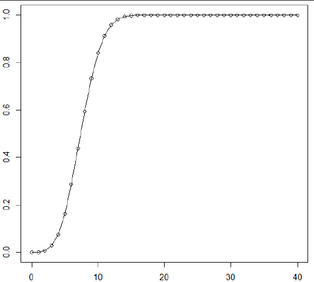
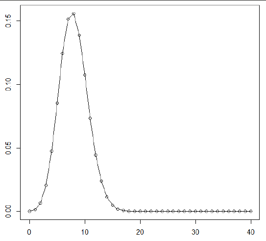

binomial probability models
Binomial Confidence Interval
Definition:
- Computes the mean (x/n) and the lower and upper confidence limits (default=95%) from inputs x and n.
library(binom)
binom.confint(x, # number of successes
n, # number of trials
conf.level = 0.95, # confidence interval
method = "all") # method to construct the interval
Solves: Find an exact 95% confidence interval for the success probability p.
Interpretation:
- 95% statistical confidence that true value of population parameter p is between lower and upper.
- Values of p between the lower and upper are roughly consistent with the data.
Binomial Probability Models
Characteristics:
- Two (and only two) possible outcomes (like 1 and 0, or success and failure)
- Multiple independent trials
- Same probability of success on each trial
- Useful for solving bivariate predictive modeling problems.
dbinom(x, size=n, prob=p) # probability of exactly x successes in n trial,
# each independently having success probability p
This is the probability density function (PDF), P(x), for the total number of successes (a random variable).
The PDF is probabilities of specific values.
pbinom(x, size=n, prob=p) # probability of at most x successes in n trials,
# each independently having success probability p
This is the cumulative distribution function (CDF) for the total number of successes.
The CDF is probabilities that X <= x for different values of x.
1 - pbinom(x-1, size=n, prob=p) # probability of at least x successes
Plotting PDFs and CDFs using plot() and line()
x = c(0:n) # create a vector (ordered list) of x values
plot(x, pbinom(x, n, p)) # to plot CDF
plot(x, dbinom(x, n, p)) # to plot PDF
lines(x, dbinom(x, n, p)) # connect the dots
pbinom(x, n, p) or dbinom(x, n, p) # list the values
Example: Plotting a CDF
Problem: Plot CDF of X having a binomial distribution with size = 40, prob = 0.2
x = (0:40)
plot(x, pbinom(x, 40, 0.2))

Interpretation: X is unlikely to be smaller than ~4 or larger than ~12.
Getting specific numbers out of a CDF using pbinom()
Notes:
- We can quantify that X is smaller than 4.
pbinom(3, 40, 0.2) # = 0.02846: the probability that X <= 3
pbinom(14, 40, 0.2) - pbinom(3, 40, 0.2) # = 0.96: the probability that 3 <= X <= 14
Plotting a binomial PDF using plot() and dbinom()
Problem: Plot PDF rv X having a binomial distribution with size = 40, prob = 0.2
x = (0:40)
plot(x, dbinom(x, 40, 0.2)

Interpretation: PDF shows the probability of each possible value:
- Most likely is x = 8
- Next most likely is x = 7
Solving problems using binomial probability models
- Predict number of deaths: 10 patients in a cardiac care unit in a hospital each independently has a 5% probability of dying. What is the probability that none of them dies?
dbinom(0, 10, .05) # 10 patients, 5% prob, none of them die
[1] 0.5987369
- Predict number of insurance claims: Each of 1000 employees independently has a 0.6 probability of submitting an insurance claim each year. What is the probability that fewer than 630 of them will submit claims next year?
pbinom(629, 1000, 0.6) # 1000 employees, 0.6 prob, < 630
[1] 0.9719571
- Predict time to an event: Each day a restaurant has a 1% probability of being closed due to COVID restrictions. What is the probability that it remains open for at least 180 days?
dbinom(0, 180, 0.01)
[1] 0.163808
also:
days = c(0:180)
plot(days, dbinom(0, size = 180, prob = 0.01)) # this is the survival curve
- Predict success probabilities: Each of 10 different groups proposing to develop a new drug (or vaccine) on a crash schedule has a 15% probability of succeeding if funded, independent of the rest. How does the probability of at least one success depend on the number of groups funded?
x = c(0:10)
plot(x, 1 - dbinom(0, size = x, prob = 0.15)) # the probability that there are not exactly 0 successes (subtracting 0 from 1)
- Each of 100 elderly patients independently has a 3% probability of an adverse reaction to a new drug. What is the probability that at most 5 of them will have an adverse reaction?
pbinom(5, size = 100, prob = 0.03) # 100 patients, 3% prob, at most 5
[1] 0.9191629
- Each of 100 elderly patients independently has a 3% probability of an adverse reaction to a new drug. What is the probability that at least 5 of them will have an adverse reaction?
1 - pbinom(4, size = 100, prob = 0.03) # if you don't have 4 or fewer, than you have 5 or more.
[1] 0.1821452
-
Each of 100 elderly patients independently has a 3% probability of an adverse reaction to a new drug. What is the probability that none of them will have an adverse reaction?
-
Each of 100 people has made a reservation. Each independently has a 97% probability of keeping it. What is the probability that at least 2 will not show up?